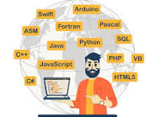

Software development is the structured process of designing, creating, testing, and maintaining computer programs and applications. It spans the entire software development lifecycle (SDLC), moving from initial planning and coding to deployment and ongoing maintenance to solve specific user or business needs.
Programming language
A programming language is a formal system of instructions used to communicate with a computer and create software, apps, or websites. These languages bridge human logic and machine execution by translating readable code into machine-executable binary.

Fig1:HTML"HTML
In HTML, element is used to define a paragraph. It is a block-level element, meaning it always starts on a new line, and browsers automatically add some white space (margins) before and after it.
PROGRAMMING
Computer programming is the process of writing step-by-step instructions (code) that tell a computer exactly how to perform tasks or solve problems. It serves as a bridge between human logic and machine execution, allowing us to build software, automate repetitive tasks, and design complex systems.
Common Classification language
Languages are commonly classified genetically (by family/origin) and typologically (by structural features). Major families include Indo-European, Sino-Tibetan, and Afro-Asiatic. Structural types divide languages into isolating, agglutinating, and inflecting. Other common classifications include word order (SVO, SOV) and proficiency levels (CEFR: A1-C2).
Google Chrome
Google Chrome is a cross-platform web browser developed by Google. It was launched in 2008 for Microsoft Windows and was built with free software components from Apple WebKit and Mozilla Firefox. Versions were later released for Linux, macOS, iOS, iPadOS, and Android, where it is currently the default browser.